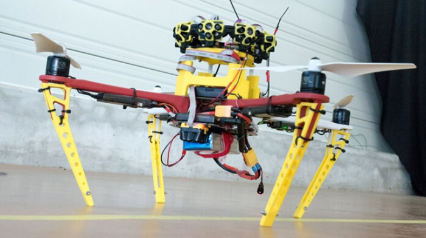

ESTA TECNOLOGÍA PERMITE QUE UN DRON EVITE OBSTÁCULOS EN INTERIORES
Sin GPS una aeronave no tripulada está perdida. Y más cuando hablamos de evitar obstáculos. Pero esta situación no es para nada extraña. En tareas que se llevan a cabo en el interior de edificios, los drones se encuentran sin geolocalización.
Sin esta tecnología es difícil situar en el espacio al dron y, por tanto, evitar los obstáculos. Sin embargo, son muchas las empresas y centros de investigación que trabajan en encontrar una solución a este problema. La gente de Terabee ha creado un sistema que se puede acoplar a un dron y le permite evitar choques con obstáculos fijos o en movimiento. La empresa francesa Terabee, creada en 2012 y que ha colaborado con el CERN (Organización Europea para la Investigación Nuclear), tiene una tecnología que enseñar al sector de los drones. Se trata de dos elementos que combinados logran una navegación más segura en interiores. Su utilidad puede ir desde inspecciones en hangares, para aviones, a la reparación de barcos, que Navantia ya ha probado a hacer. Ellos mismos lo muestran en un vídeo donde un dron de manufactura propia, pertrechado con su TeraRanger Tower y su TeraRanger Evo, evita los choques sin que intervenga el piloto.

El dispositivo no tiene GPS ni posicionamiento por radiofrecuencia, una técnica que se emplea habitualmente en interiores. Pero la TeraRanger Tower son los ojos de este dron. Es un dispositivo con ocho sensores que escanean simultáneamente el entorno. La tecnología que usan es la llamada SLAM (mapeo y localización de simultáneos), que se emplea para trazar un mapa del entorno, así como para predecir el desplazamiento dentro de este. La otra tecnología es el TeraRanger Evo, un altímetro que mantiene la altura del dron.
Además, el dron de Terabee se basa en hardware libre, como el ArduCopter, una plataforma para construir aeronaves no tripuladas sobre la placa Arduino, o Pixhawk, otro proyecto de hardware libre, en este caso centrado en las funciones de autopiloto.